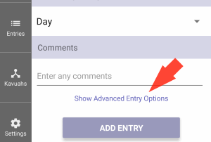

The Luach Application is intented to be a helpful tool to keep track of a womens Halachic dates.
A VERY IMPORTANT NOTE
The Luach Application has no Halachic status whatsoever, and can not take the place of a Rabbinic authority in any matter.
If the app is relied upon for halachic matters in any shape or manner, there is a very high chance
that severe trangressions of the laws of Taharas Hamishpacha will occur; many of which carry the penalty
of Kareis.
This page gives a short explanation for the terms and features of Luach.
This is the screen that you will first come to when the the Luach app first opens.
It is called the Today Screen.
On the right, there is a list of days. When Luach loads, the top day is always the current day.
By scrolling down you will see the upcoming days. You can also scroll up to see the previous days.
There is technichally no limit on how far into the future or past you can scroll.
You can also scroll through the days by using the arrow buttons on the menu on the right.
You can always return to Today, by pressing on the Today button from the menu on the right.
Within the box of each day, you will find some basic information about that day such as:
Halachic "Today"
As Luach is a Halachic calendar, the correct Jewish Date always needs to be taken into account.
For this reason, if the current system time is after sunset for your location, the Today screen will display the following day as "Today".
For example; if the time is currently after sunset on Sunday the 3rd of Shvat / January 12th, the Today screen will show, Monday the 4th of Shvat as "Today".
The secular date though, will continue to be displayed as January 12th as it does not change until midnight.
Due to the above behavior, you may notice that the list of days on the Today screen may looks strange; the following day in the list, will be Tuesday the 5th of Shvat with the secular day shown as the 14th of January - hereby seemingly skipping January the 13th.
This is a consequence of the fact that the secular date for Today's box is displaying the secular date at the current time, while the other days box's are all showing the Secular Date at midnight of that date.
This behavior can be changed from the Settings Screen, by changing the "Calendar displays current" setting.
Under the date, you will see your current location and the times for sunrise and sunset for this day at this
location.
The location can be changed to almost any place in the world. To change the location, click on
the name of the location.
You can also change the location from the Settings Screen.
On the right side of each day you will find
If an Entry occured on this day, the background color of the day will be light red and a small label of bold red text with a brief synopsis of the Entry information will be shown. (see screenshot).
If this day is a Flagged Date, the background color of the day will be yellow and a red flag will be shown. (see screenshot).
You will also find a small text section that informs you how many days it has been since the last Entry.
Keep in mind that the number displayed is the Halachaic number of days; where even a small part of a
day is also a day.
So, if the Entry occured on Sunday and today is Tuesday, the text will read:
3rd day since last Entry
On the bottom section of each day, you will see two buttons, New Entry and New Occasion.
Press on this button to create a new Entry for this day.
You will be taken to the New Entry screen, with this day, already selected for you.
To undersand what an Entry is in the Luach app, see the Entry section below.
Press on this button to create a new Entry for this day. To undersand what an Entry is in the Luach app, see the Entry section below.
An Entry is a single period (וסת - veset).
Entries are the most basic piece of information that needs to be retained in order to keep a valid Halachic calendar.
The goal of keeping track of entries is threefold:
It is very important to note that not every seeing is considered a Halachic Veset Entry.
For example, staining and the like are usually not considered Halachik Entries even those that require
the Niddah restrictions.
Any seeing is not a regular monthly period, needs Rabbininc determination whether or not to record it
as a regular Entry.
In Luach, when an Entry is added, it is assumed to be a regular period. In the special cases where it
was determined that it should not be a regular Entry, there are two special options that can be set for each
Entry.
On the New Kavuah Screen, just above the "Add Entry" button, press on "Show Advanced Entry Options".

You will then see two options that can be set for this Entry:
Luach uses the list of Entries to automatically calculate the Flagged Dates and possible Kavuahs.
The list of Entries that have been added can be viewed from the Entries List Screen.
There are two places a new Entry can be added to the Entry list:
Each Entry has the following properties:
Jewish Date
The day, month and year of the Jewish Date for the beginning of the period.
Onah
Each Jewish day is divided into two "Onahs"; the Night Onah and the Day Onah.
If the period began between sunset and sunrise, the Entry is conidered to have occurred during the Night Onah. If it began between sunrise and sunset, it is considered to have occured during the Day Onah.
Luach is able to give you the time of sunset and sunrise for any location around the globe for any date. Make sure that you have selected your current location on the Settings Screen, and that your device has the correct time and time zone for your location.
If the time of the start of the period is very close (within about 13 minutes) of the sunset or sunrise time, it is strongly advisable to contact your Rav to help determine the correct date and Onah for that Entry.
Haflaga
The number of days or partial days between the previous Entry and this one. Upon the addition of an Entry, Luach automatically works out the Haflaga from the previous Entry.
A Kavuah is a halachic term describing when a women has multiple periods in a recurring pattern.
When a women has a set Kavuah pattern, it is expected that periods will continue to occur in this pattern. This is until the pattern has been proven to have "broken".
Kavuah setting and breaking is a very complex Halachic issue and should aways be accompanied with Rabinic guidance.
There are many ways that recurring preiods can be considered to have occured in a pattern.
Here is a list of a few of the more common ones:
In the Luach app, while adding a new Kavuah, the following properties wiil need to be filled out:
Kavuah Type
The type of Kavuah that is being set. For a brief explanation of some of the Kavuah types see the list above.
Setting Entry
Kavuah Defining Number
Cancels Onah Beinonis
Active